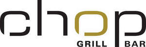

Trade Mark Journal No.2025/014 4 April 2025
UK00004161331 17 February 2025 (32,33,41,43)
Mark 1

Mark 2
- Class 32
- Beers; non-alcoholic beverages; mineral and aerated waters; fruit beverages; fruit juices; syrups and other preparations for making non-alcoholic beverages.
- Class 33
- Alcoholic beverages, except beers; alcoholic preparations for making beverages.
- Class 41
- Entertainment; live entertainment; musical entertainment; hospitality services (entertainment); arranging, organising, conducting and hosting entertainment events, musical events, live performances, live music events, concerts, cultural events, educational events, sporting events, and competitions; provision and management of entertainment events, musical events, live performances, live music events, concerts, cultural events, educational events, sporting events, and competitions; live music; live performances; nightclub services; casino, gambling, gaming and betting services; ticket reservation and booking services for entertainment events, musical events, live music events, concerts, cultural events, marketing events, promotional events, educational events, sporting events, and competitions; consultancy, design, planning and conducting of events, in particular entertainment, musical, cultural, educational, sport, business and corporate events and congresses; events agency services; corporate entertainment services; arranging and rental of event rooms and event venues; rental of equipment for events, event rooms and venues; providing facilities for shows, events, concerts, competitions, conferences, seminars, workshops, exhibitions, networking events, and symposiums; rental services relating to equipment and facilities for entertainments, culture, sports and education; party, conference, workshop, networking events and function planning; publication services; electronic publication; rental of mobile stages, stands, catwalks and stage systems; rental of equipment for stages, stands, catwalks, stage systems, events, event rooms and venues; providing of training; sporting and cultural activities; provision of leisure club services; provision of sport, leisure and recreational facilities; gymnasium services; personal coaching services; personal training services; personal fitness training services; education; information, advisory and consultancy services in relation to all of the aforementioned services.
- Class 43
- Services for providing food and drink; catering services; restaurant, dining room, bistro, brasserie, delicatessen, cafe, cafeteria, snack bar, tea shop and coffee bar services; pizzeria and trattoria services; pizza parlours; sandwich bar and takeaway restaurant services; preparation of meals, foodstuffs and beverages; preparation of meals, foodstuffs and beverages for cooking or finishing at home; private members dining club services; private dining services; preparation of meals, foodstuffs and beverages for consumption off the premises; takeaway snack services; takeaway food services; takeaway beverage services; bar, cocktail bar, wine bar and public house services; provision of facilities for the consumption of food and beverages; business catering services; mobile catering services; outside catering services; services for the organisation of the catering at functions; provision of facilities for functions, exhibitions and conferences; advice and assistance relating to food and drink and the preparation thereof; temporary accommodation; provision of event facilities; provision of event facilities for entertainment events, musical events, cultural events, marketing events, promotional events, educational events, sporting events, and competitions; hotel services; hospitality services (accommodation); temporary room hire; rental of tableware and cutlery; rental of chairs, tables, table linen and glasses; rental of mobile bar units, counters, tables, benches, tap installations, catering accessories and furniture; information, advisory and consultancy services relating to all of the aforementioned services.
Shark Club (UK) Limited
Representative: Murgitroyd & Company